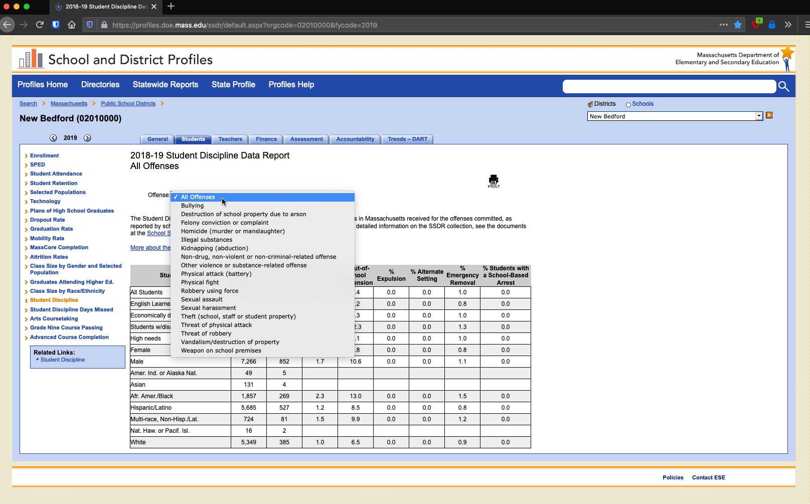
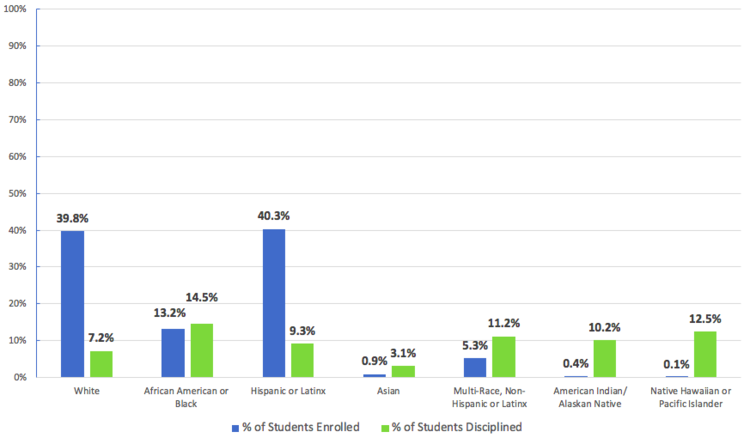
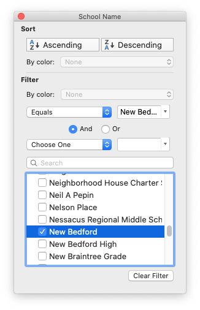
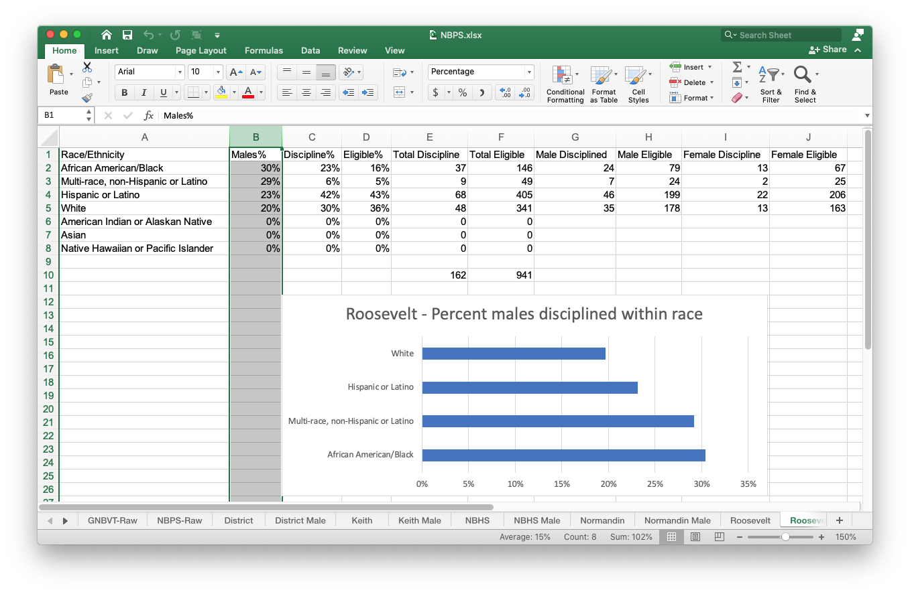

2021-03-07 08:00
We know that in the Commonwealth of Massachusetts neither the schools nor the police are collecting adequate data on school-based offenses. This is not to single-out New Bedford. It reflects a state-wide, if not a national, lack of interest in tracking at-risk youth.
Many types of data describing the process of a child moving through the juvenile justice system — from schools, the Department of Elementary and Secondary Education (DESE), police, district attorneys, courts, probation, the Department of Youth Services, federal DOE and DOJ mandated data — must be analyzed in order to answer two critical questions about School Resource Officers: (1) does the presence of armed police in schools actually deter violence and mass shootings? and (2) is there a risk to children, particularly children of color, of disproportionate discipline and their early introduction into the criminal justice system?
However, there is some data, and we need to look at it. In January the NAACP New Bedford branch hosted a community discussion of SROs and juvenile justice. One of the invited organizations looked at data which school collect and turn over to DESE. Citizens for Juvenile Justice (CFJJ) obtained DESE data on school discipline in Massachusetts Gateway Cities. Aggregated data is published on the DESE site and there it is possible to look at specific infractions by school or by district. For example, you can find the New Bedford schools here:

From this data we find that in 2018-2019, out of 13,811 students in the entire district, 35 were disciplined for weapons (types unspecified), 69 for threats to other students, zero for sexual assault, 70 for fighting, 508 for battery (which includes any form of contact such as shoving or spitting), 65 for illegal substances, zero for felonies, and 5 for bullying.
But the New Bedford Public Schools already knows this. It’s their data.
The relative absence of violent crime in these numbers suggests that SROs are either unnecessary or are preventing serious crimes currently not being documented. Without data or specifics it is impossible to know which is the case. As the Justice Policy Institute has documented, schools have disciplined and expelled children just for chewing a Pop-Tart into the shape of a gun. To determine if armed police are actually needed in the New Bedford schools, a better analysis of disciplinary cases, then, is necessary to determine which cases actually rose to the level of a crime.
CFJJ obtained the raw data behind the DESE numbers in order to look at discipline by race, gender, disability, economic status, and language.
Using this data CFJJ prepared a statistical analysis for each Gateway City. The New Bedford analysis was one of them. CFJJ looked at overall discipline by race, discipline for students with a disability, students economically disadvantaged, and students whose first language is not English.

The NAACP New Bedford branch obtained CFJF’s DESE data extract. You can download it here. It was possible to reproduce CFJJ’s results and also to crunch the data in additional ways. For example, we can view high school and middle school discipline with greater granularity, and by school. You can download an extract for the New Bedford schools here.
The DESE-supplied data relies on Excel Autofilters, which anyone familiar with the software should be able to apply.

Then, using Excel’s charts, visual respresentations of the data can be produced:

While CFJJ’s Gateway City report looked at discipline by the percentage of, for example, Black students over all students disciplined, it is also possible to look at the percentage of Black students disciplined over only Black students. We found that, within each racial group, Black males were always the statistically most likely to be disciplined — reflecting what national research already shows — even when they represented a smaller proportion of total disciplinary cases.
For example, the chart above for Roosevelt Middle School shows that almost one out of three Black males were disciplined while only one out of five white males were. In fact, the discriminatory over-discipline of Black males is a feature throughout all New Bedford non-elementary schools and also at Greater New Bedford Voc-Tech, whose numbers we also obtained.
Similar analyses can be done for non-English-speakers, students with disabilities, and those living in poverty. As both the ACLU and the American Bar Association point out, students of color with disabilities are especially likely to be injected into the school-to-prison pipeline.
The Sentencing Project recently released a report on racial disparities in youth incarceration in the United States. Guess which state had the 9th worst disparity in Black youth incarceration? Massachusetts. And guess which state was Number One in incarceration disparities for Latino children? Massachusetts. And this follows significant 2018 reforms affecting youth in the criminal justice system.
So why is all this important? Because SROs are frequently asked to handle disciplinary matters that have nothing to do with crimes, and the DESE data CFJJ has published shows that school officials who may ask SROs to intercede are more likely to discipline children of color.
Until the New Bedford Public Schools can prove that the benefits outweigh the risks, we call on Superintendent Anderson to suspend, immediately, their SRO program with the New Bedford Police.
Downloads